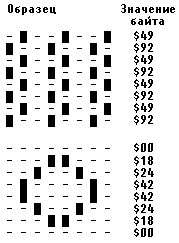
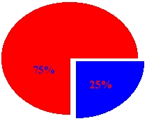

|
|
|
|
Краски, палитры, заполнения
Процедура SetColor.
Устанавливает текущий цвет для выводимых линий и символов. Заголовок:
Procedure SetColor(Color: Word);
Здесь Color - текущий цвет.
В модуле Graph определены точно такие же константы для задания цвета, как и в модуле СИГ (см. п.13.2).
Функция GetColor. Возвращает значение типа Word, содержащее код текущего цвета. Заголовок:
Function GetColor: Word;
Функция GetMaxColor.
Возвращает значение типа Word, содержащее максимальный доступный код цвета, который можно использовать для обращения к SetColor. Заголовок:
Function GetMaxColor: Word;
Процедура SetBkColor.
Устанавливает цвет фона. Заголовок:
Procedure SetBkColor(Color: Word);
Здесь Color - цвет фона.
В отличие от текстового режима, в котором цвет фона может быть только темного оттенка, в графическом режиме он может быть любым. Установка нового цвета фона немедленно изменяет цвет графического экрана. Это означает, что нельзя создать изображение, два участка которого имели бы разный цвет фона. Для CGA -адаптера в режиме высокого разрешения установка цвета фона изменяет цвет активных пикселей. Замечу, что после замены цвета фона на любой, отличный от 0 (Black) цвет, Вы не сможете более использовать цвет 0 как черный, он будет заменяться на цвет фона, т.к. процедуры модуля Graph интерпретируют цвет с номером 0 как цвет фона. Это означает, в частности, что Вы уже не сможете вернуть фону черный цвет!
Если Ваш ПК оснащен цветным экраном, следующая программа продемонстрирует работу процедуры SetBkColor. Программа выводит десять вложенных друг в друга прямоугольников, после чего циклически меняет цвет фона. Для выхода из программы достаточно нажать на любую клавишу.
Uses Graph, CRT;
const
NC: array [0..15] of String [12] =
('Black','Blue','Green','Cyan','Red','Magenta',
' Brown','LightGray','DarkGray','LightBlue',
'LightGreen1,'LightCyan1,'LightRed',
'LightMagenta','Yellow','White');
var
d, r, e, k, color, dx, dy: Integer;
begin
{Инициируем графику}
d := Detect; InitGraph(d, r, ' ') ;
e := GraphResult; if e <> grOK then
WriteLn(GraphErrorMsg(e))
else
begin
{Выводим текст в центре экрана}
OutTextXY(200,GetMaxY div 2,'BACKGROUND COLOR');
dx := GetMaxX div 30; {Приращение длины}
dy := GetMaxY div 25; {Приращение высоты}
for k := 0 to 9 do{Выводим 10 прямоугольников}
Rectangle(k*dx,k*dy,GetMaxX-k*dx,GetMaxY-k*dy);
color := black; {Начальный цвет фона}
repeat {Цикл смены фона}
SetBkColor(color) ;
SetFillStyle(0,Color);
Bar(345,GetMaxY div 2,440,GetMaxY div 2+8);
OutTextXY(345,GetMaxY div 2,NC[color]);
delay(1000);
inc(color);
if color > White then
color := Black until KeyPressed;
if ReadKey=#0 then
k := ord(ReadKey);
CloseGraph
end
end.
Функция GetBkColor.
Возвращает значение типа Word, содержащее текущий цвет фона. Заголовок:
Function GetBkColor: Word;
Процедура SetPalette.
Заменяет один из цветов палитры на новый цвет. Заголовок:
Procedure SetPalette(N: Word; Color: Shortlnt);
Здесь N - номер цвета в палитре; Color - номер вновь устанавливаемого цвета.
Данная процедура может работать только с адаптерами EGA или VGA. Она не должна использоваться с IBM8514 или 256-цветным вариантом VGA - для этих адаптеров предназначена особая процедура SetRGBPalette (см. ниже). Первоначальное размещение цветов в палитрах EGA/VGA соответствует последовательности их описания константами Black,....White, т.е. цвет с индексом 0 - черный, 1 - синий, 2 - зеленый и т.д. После обращения к процедуре все фрагменты изображения, выполненные цветом с индексом N из палитры цветов, получат цвет Color. Например, если выполнить оператор
SetPalette(2,White);
то цвет с индексом 2 (первоначально это - бирюзовый цвет Cyan) будет заменен на белый. Замечу, что цвет с индексом 0 отождествляется с цветом фона и может изменяться наряду с любым другим цветом.
Следующая программа выводит на экран ряд прямых разного цвета и затем случайным образом меняет цвета палитры.
Uses Graph, CRT;
var
d,r,e,N,k,color: Integer;
Palette : PaletteTyper;
begin
{Инициируем графику}
d := Detect; InitGraph(d, r, ' ') ;
e := GraphResult; if e <> grOK then
WriteLn(GraphErrorMsg(e))
else
begin
{Выбираем толстые сплошные линии}
SetLineStyle(SolidLn, 0, ThickWidth);
GetPalette(Palette) ; {Текущая палитра}
for Color := 0 to Palette.Size-1 do
begin
SetColor(Color);
Line(GetMaxX div 3,Color*10,2*GetMaxX div 3,Color*10)
end;
{Меняем палитру и ждем инициативы пользователя}
while not KeyPressed do
for e := 0 to Palette.Size-1 do
SetPalette(e,Random(Palette.Size));
if ReadKey=#0 then d := ord(ReadKey);
CloseGraph
end
end.
Процедура GetPalette.
Возвращает размер и цвета текущей палитры. Заголовок:
Procedure GetPalette(var Palettelnfo: PaletteType);
Здесь Palettelnfo - переменная типа PaletteType, возвращающая размер и цвета палитры.
В модуле Graph определена константа
const
MaxColors =15;
и тип
type
PaletteType = record
Size : Word; {Количество цветов в палитре}
Colors : array [0..MaxColors] of Shortlnt
{Номера входящих в палитру цветов}
end;
С помощью следующей программы можно вывести на экран номера всех возможных цветов из текущей палитры.
Uses Graph;
var
Palette: PaletteType;
d,r,e,k: Integer;
begin
{Инициируем графику}
d := Detect; InitGraph(d, r, ' ') ;
e := GraphResult; if e <> grOk then
WriteLn(GraphErrorMsg(e))
else
begin
GetPalette(Palette); {Получаем палитру}
CloseGraph; {Возвращаемся в текстовый режим}
with Palette do {Выводим номера цветов}
for k := 0 to pred(Size) do
Write(Colors[k]:5);
end
end.
Процедура SetAllPalette.
Изменяет одновременно несколько цветов палитры. Заголовок процедуры:
Procedure SetAllPalette(var Palette);
Параметр Palette в заголовке процедуры описан как нетипизированный параметр. Первый байт этого параметра должен содержать длину N палитры, остальные N байты - номера вновь устанавливаемых цветов в диапазоне от -1 до MaxColors. Код -1 означает, что соответствующий цвет исходной палитры не меняется.
В следующей программе происходит одновременная смена сразу всех цветов палитры.
Uses Graph, CRT;
var
Palette: array [0..MaxColors] of Shortint;
d,r,e,k: Integer;
begin
{Инициируем графику}
d := Detect; InitGraph(d, r, '');
e := GraphResult; if e <> grOk then
WriteLn(GraphErrorMsg(e))
else
begin
{Выбираем толстые сплошные линии}
SetLineStyle(SolidLn, 0, ThickWidth);
{Выводим линии всеми доступными цветами}
for k := 1 to GetMaxColor do
begin
SetColor(k);
Line(GetMaxX div 3,k*10,2*GetMaxX div 3,k*10)
end;
Palette[0] := MaxColors; {Размер палитры}
repeat {Цикл смены палитры}
for k := 1 to MaxColors do
Palette[k] := Random(succ(MaxCoLors));
SetAllPalette(Palette)
until KeyPressed;
if ReadKey=#0 then k := ord(ReadKey);
CloseGraph
end
end.
Функция GetPaletteSize.
Возвращает значение типа Integer, содержащее размер палитры (максимальное количество доступных цветов). Заголовок:
Function GetPaletteSize: Integer;
Процедура GetDefaultPalette.
Возвращает структуру палитры, устанавливаемую по умолчанию (в режиме автонастройки). Заголовок:
Procedure GetDefaultPalette(var Palette: PaletteType);
Здесь Palette - переменная типа PaletteType (см. процедуру GetPalette), в которой возвращаются размер и цвета палитры.
Процедура SetFillStyle.
Устанавливает стиль (тип и цвет) заполнения. Заголовок:
Procedure SetFillStyle(Fill,Color: Word);
Здесь Fill - тип заполнения; Color - цвет заполнения.
С помощью заполнения можно покрывать какие-либо фрагменты изображения периодически повторяющимся узором. Для указания типа заполнения используются следующие предварительно определенные константы:
const
EmptyFill = 0;{Заполнение фоном (узор отсутствует)}
SolidFill = 1;{Сплошное заполнение}
LineFill = 2;{Заполнение -------}
LtSlashFill = 3;{Заполнение ///////}
SlashFill = 4;{Заполнение утолщенными ///}
BkSlashFill = 5;{Заполнение утолщенными \\\}
LtBkSlashFill = 6;{Заполнение \\\\\\\}
HatchFill = 7;{Заполнение +++++++}
XHatchFill = 8;{Заполнение ххххххх}
InterleaveFill= 9;{Заполнение прямоугольную клеточку}
WideDotFill = 10;{Заполнение редкими точками}
CloseDotFill = 11;{Заполнение частыми точками}
UserFill = 12;{Узор определяется пользователем}
Программа из следующего примера продемонстрирует Вам все стандартные типы заполнения.
Uses Graph, CRT;
var
d,r,e,k,j,x,y: Integer;
begin
{Инициируем графику}
d := Detect; InitGraph(d, r, ' ') ;
e := GraphResult; if e <> grOk then
WriteLn(GraphErrorMsg(e))
else
begin
x := GetMaxX div 6;{Положение графика}
у := GetMaxY div 5;{на экране}
for j := 0 to 2 do{Два ряда}
for k := 0 to 3 do{По четыре квадрата}
begin
Rectangle((k+1)*x,(j+1)*y,(k+2)*x,(j+2)*y);
SetFillStyle(k+j*4,j+1);
Bar((k+1)*x+1,(j+1)*y+1,(k+2)*x-1,(j+2)*y-1)
end;
if ReadKey=#0 then k := ord(ReadKey);
CloseGraph
end
end.
Если параметр Fill имеет значение 12 (UserFill), то рисунок узора определяется программистом путем обращения к процедуре SetFillPattern.
Процедура SetFillPattern.
Устанавливает образец рисунка и цвет штриховки. Заголовок:
Procedure SetFillPattern(Pattern: FillPatternType;Color: Word);
Здесь Pattern - выражение типа FillPatternType; устанавливает образец рисунка для Fill - UserFill в процедуре SetFillStyle; Color - цвет заполнения.
Образец рисунка задается в виде матрицы из 8x8 пикселей и может быть представлен массивом из 8 байт следующего типа:
type
FillPatternType = array [1..8] of Byte;
Каждый разряд любого из этих байтов управляет светимостью пикселя, причем первый байт определяет 8 пикселей первой строки на экране, второй байт - 8 пикселей второй строки и т.д.
На рис. 14.8 показан пример двух образцов заполнения. На рисунке черточкой обозначается несветящийся пиксель, а прямоугольником - светящийся. Для каждых 8 пикселей приводится шестнадцатеричный код соответствующего байта.
Следующая программа заполняет этими образцами две прямоугольных области экрана.

Рис.14.8. Образцы заполнения и их коды
Uses Graph, CRT;
const
pattl: FillPatternType= ($49,$92,$49,$92,$49,$92,$49,$92);
patt2: FillPatternType= ($00,$18,$24,$42,$42,$24,$18,$00);
var
d,r,e: Integer;
begin {Инициируем графику}
d := Detect; InitGraph(d, r, '');
e := GraphResult; if e <> grOk then
WriteLn(GraphErrorMsg(e))
else
begin
if d=CGA then
SetGraphMode (0) ; {Устанавливаем цвет для CGA}
SetFillStyle(UserFill,White);
{Левый верхний квадрат}
SetFillPattern(Patt1,1);
Bar(0,0,GetMaxX div 2, GetMaxY div 2);
{Правый нижний квадрат}
SetFillPattern(Patt2,2);
Bar(GetMaxX div 2,GetMaxY div 2,GetMaxX,GetMaxY);
if ReadKey=#0 then d := ord(ReadKey);
CloseGraph
end
end.
Если при обращении к процедуре указан недопустимый код цвета, вызов процедуры игнорируется и сохраняется ранее установленный образец заполнения. В частности, если в предыдущем примере убрать оператор
if d=CGA then
SetGraphMode(0);
устанавливающий цветной режим работы CGA -адаптера, на экран ПК, оснащенного адаптером этого типа, будут выведены два одинаковых прямоугольника, так как обращение
SetFillPattern(patt2, 2);
содержит недопустимо большой для данного режима код цвета и обращение игнорируется. Сказанное, однако, не относится к процедуре SetFillStyle для значения параметра Fill в диапазоне от 0 до 11: программа будет нормально работать и в режиме высокого разрешения CGA-адаптера, причем все цвета палитры, кроме цвета фона, при этом заменяются на белый.
Процедура GetFillPattern.
Возвращает образец заполнения, установленный ранее процедурой SetFillPattern. Заголовок:
Procedure GetFillPattern(var Pattern: FillPatternType);
Здесь Pattern - переменная типа FillPatternType, в которой возвращается образец заполнения.
Если программа не устанавливала образец с помощью процедуры SetFillPattern, массив Pattern заполняется байтами со значением 255 ($FF).
Процедура GetFillSettings.
Возвращает текущий стиль заполнения. Заголовок:
Procedure GetFillSettings(var Pattlnfo: FillSettingsType);
Здесь Pattlnfo - переменная типа FillSettingsType, в которой возвращается текущий стиль заполнения,
В модуле Graph определен тип:
type
FillSettingsType = record
Pattern: Word; {Образец}
Color : Word {Цвет}
end;
Поля Pattern и Color в этой, записи имеют то же назначение, что и аналогичные параметры при обращении к процедуре SetFillStyle.
Процедура SetRGBPalette.
Устанавливает цветовую гамму при работе с дисплеем IBM 8514 и адаптером VGA. Заголовок:
Procedure SetRGBPalette(ColNum,RedVal, GreenVal,BlueVal:Integer);
Здесь ColNum - номер цвета; RedVal, GreenVal, BlueVal - выражения типа Integer, устанавливающие интенсивность соответственно красной, зеленой и синей составляющих цвета.
Эта процедура может работать только с дисплеем IBM 8514, а также с адаптером VGA, использующим видеопамять объемом 256 Кбайт. В первом случае параметр ColNum задается числом в диапазоне 0...255, во втором - в диапазоне 0...15. Для установки интенсивности используются 6 старших разрядов младшего байта любого из параметров RedVal, GreenVal, BlueVal.
В следующей программе в центре экрана выводится прямоугольник белым цветом, после чего этот цвет случайно изменяется с помощью процедуры SetRGBPalette. Для выхода из программы нужно нажать любую клавишу.
Uses Graph,CRT;
var
Driver, Mode, Err, xl, yl: Integer;
begin
{Инициируем графический режим}
Driver := Detect;
InitGraph(Driver, Mode, '');
Err := GraphResult;
if ErroO then
WriteLn(GraphErrorMsg(Err))
else if Driver in [IBM8514, VGA] then
begin
{Выводим прямоугольник в центре экрана}
x1 := GetMaxX div 4;
y1 := GetMaxY div 4;
SetColor(lS);
Bar(x1,y1,3*x1,3*y1);
{Изменяем белый цвет на случайный}
while not KeyPressed do
SetRGBPalette(15,Random(256),Random(256),Random(256));
CloseGraph
end
else
begin
CloseGraph; .
WriteLn('Адаптер не поддерживает ' , 'RGB-режим управления цветами')
end
end.
Процедура FloodFill.
Заполняет произвольную замкнутую фигуру, используя текущий стиль заполнения (узор и цвет). Заголовок:
Procedure FloodFill(X,Y: Integer; Border: Word);
Здесь X, Y- координаты любой точки внутри замкнутой фигуры; Border - цвет граничной линии.
Если фигура незамкнута, заполнение «разольется» по всему экрану.
Следует учесть, что реализованный в процедуре алгоритм просмотра границ замкнутой фигуры не отличается совершенством. В частности, если выводятся подряд две пустые строки, заполнение прекращается. Такая ситуация обычно возникает при заполнении небольших фигур с использованием типа LtSlashFill. В фирменном руководстве по Турбо Паскалю рекомендуется, по возможности, вместо процедуры FloodFill использовать FillPoly (заполнение прямоугольника).
Следующая программа демонстрирует заполнение случайных окружностей. Сначала в центре экрана создается окно, в котором заполняется небольшой прямоугольник. Часть прямоугольника останется незаполненной, в чем Вы можете убедиться, так как программа в этот момент приостанавливает работу, ожидая нажатия на клавишу Enter. Затем осуществляется вывод и заполнение случайных окружностей до тех пор, пока не будет нажата любая клавиша. Замечу, что прямоугольник заполняется полностью, если вместо типа LtSlashFill (косая штриховка линиями обычной толщины) используется SlashFill (штриховка утолщенными линиями). Если программа будет работать достаточно долго, она может «зависнуть», что лишний раз свидетельствует о несовершенстве реализованного в ней алгоритма.
Uses Graph, CRT;
var
d, r, е, х, у, с : Integer;
begin
{Инициируем графику}
d := Detect; InitGraph(d, r, ' ') ;
e := GraphResult;
if e <> grOk then . . WriteLn(GraphErrorMsg(e))
else
begin
{Создаем прямоугольное окно}
х := GetMaxX div 4;
у. := GetMaxY div 4;
Rectangle(х,у,3*x,3*y);
SetViewPort(x+1,y+1, 3*x-1,3*y-1,ClipOn);
{Демонстрируем заливку маленького прямоугольника}
SetPillStyle(LtSlashFill,GetMaxColor);
Rectangle(0,0,8,20); FloodFill(1,1,GetMaxColor);
OutTextXY(10,25,'Press Enter...');
ReadLn; {Ждем нажатия Enter}
{Выводим окружности до тех пор, пока не будет нажата любая клавиша}
repeat
{Определяем случайный стиль заливки}
SetFillStyle(Random(12),Random(GetMaxColor+1));
{Задаем координаты центра и цвет окружности}
х := Random (GetMaxX div 2);
у := Random (GetMaxY div 2);
с := Random (succ(GetMaxColor));
SetColor(c);
{Выводим и заливаем окружность}
Circle(x, у, Random(GetMaxY div 5));
FloodFill (x, у, с)
until KeyPressed;
if ReadKey=#0 then
x := ord(ReadKey);
CloseGraph
end
end.
Процедура Bar.
Заполняет прямоугольную область экрана. Заголовок:
Procedure Bar(X1,Y1,X2,Y2: Integer);
Здесь XJ...Y2 - координаты левого верхнего (X1, Y1) и правого нижнего (Х2, Y2) углов закрашиваемой области.
Процедура закрашивает (но не обводит) прямоугольник текущим образцом узора и текущим цветом, которые устанавливаются процедурой SetFillStyle.
Следующая программа дает красивые цветовые эффекты (закраска случайных прямоугольников).
Uses Graph, CRT;
var
d, r, e : Integer;
begin
{Инициируем графику}
d : = Detect; InitGraph(d, r, '');
e := GraphResult; if e <> grOk then
WriteLn(GraphErrorMsg(e))
else
begin
{Создаем окно в центре экран}
d := GetMaxX div 4;
r := GetMaxY div 4; Rectangle(d,r,3*d,3*r);
SetViewPort(d+1,r+1,3*d-1,3*r-1,ClipOn);
{Цикл вывода и закраски случайных многоугольников}
repeat
SetFillStyle(Random(12),Random(succ(GetMaxColor)));
Bar(Random(Ge tMaxX),Random(Ge tMaxY),
Random(Ge tMaxX),Random(Ge tMaxY));
until KeyPressed;
if ReadKey=#0 then d := ord(ReadKey);
CloseGraph
end
end.
Процедура Ваr3D.
Вычерчивает трехмерное изображение параллелепипеда и закрашивает его переднюю грань . Заголовок:
Procedure Ваr3D (X1,Y1,X2,Y2,Depth: Integer; Top: Boolean);
Здесь X1... Y2 - координаты левого верхнего (X1, Y1) и правого нижнего (Х2, Y2) углов передней грани; Depth - третье измерение трехмерного изображения («глубина») в пикселях; Тор - способ изображения верхней грани.
Если параметр Тор имеет значение True, верхняя грань параллелепипеда вычерчивается, в противном случае - не вычерчивается (этот вариант используется для изображения поставленных друг на друга параллелепипедов, см. следующий пример). В качестве значения этого параметра может использоваться одна из следующих констант, определенных в модуле Graph:
const
TopOn = True;
TopOff = False;
При вычерчивании используется текущий стиль линий (SetLineStyle) и текущий цвет (SetColor). Передняя грань заливается текущим стилем заполнения (SetFillStyle).
Процедура обычно применяется при построении столбиковых диаграмм. Следует учесть, что параллелепипед «прозрачен», т.е. за его незакрашенными гранями могут быть видны другие элементы изображения.
Следующая программа иллюстрирует различные аспекты применения процедуры Bar3D.
Uses Graph,CRT;
var
d, r, e: Integer;
begin
{Инициируем графику}
d := Detect;
Ini-tGraph(d, r, ' ') ;
e := GraphResult;
if e <> grOk then
WriteLn(GraphErrorMsg(e))
else
begin
{Столбик с верхней гранью:}
Bar3D (80, 100, 120, 180, 15, TopOn);
{Столбик без верхней грани:}
Ваг3D (150, 150, 190, 180, 15, TopOff);
{Этот столбик "стоит" на следующем и прозрачен:}
Bar3D (230, 50, 250, 150, 15, TopOn);
Bar3D (220, 150, 260, 180, 15, TopOn);
{У этого столбика нет верхней грани, и поэтому он не мешает поставленному на него сверху:}
Bar3D (300, 150, 340, 180, 15, TopOff);
SetLineStyle(3,0,1);
SetColor(Yellow);
SetFillStyle(LtSlashFill,Yellow);
Bar3D (300, 50, 340, 150, 15, TopOn);
if ReadKey=#0 then d := ord(ReadKey);
CloseGraph;
end
end.
Процедура Fill Poly.
Обводит линией и закрашивает замкнутый многоугольник. Заголовок:
Procedure FillPoly(N: Word; var Coords);
Здесь N - количество вершин замкнутого многоугольника; Coords - переменная типа PointType, содержащая координаты вершин.
Координаты вершин задаются парой значений типа Integer: первое определяет горизонтальную, второе - вертикальную координаты. Для них можно использовать следующий определенный в модуле тип:
type
PointType = record
х, у : Integer
end;
Стиль и цвет линии контура задаются процедурами SetLineStyle и SetColor, тип и цвет заливки - процедурой SetFillStyle.
В следующем примере на экран выводятся случайные закрашенные многоугольники.
Uses Graph, CRT;
var
d, r, e: Integer;
p : array [1..6] of PointType; n, k : Word;
begin
{Инициируем графику}
d := Detect; InitGraph(d, r, ' ') ;
e := GraphResult; if e <> grOk then
WriteLn(GraphErrorMsg(e))
else
begin
{Создаем окно в центре экрана}
d := GetMaxX div 4;
r := GetMaxY div 4;
Rectangle(d,r,3*d,3*r);
SetViewPort(d+l,r+l,3*d-l,3*r-l,ClipOn);
{Цикл вывода случайных закрашенных многоугольников}
repeat
{Выбираем случайный цвет и узор)
SetFillStyle(Random(12),Random(succ(GetMaxColor)));
SetColor (Random(succ(GetMaxColor)));
{Назначаем случайные координаты}
n := Random (4) + 3 ; for k := 1 to n do with p[k] do
begin
x := Random (GetMaxX div 2);
у := Random (GetMaxY div 2)
end;
FillPoly (n, p) {Выводим и закрашиваем}
until KeyPressed;
if ReadKey=#0 then k := ord(ReadKey);
CloseGraph
end
end.
Процедура FillEllipse.
Обводит линией и заполняет эллипс. Заголовок:
Procedure FillEllipse(X,Y,RX,RY: Integer);
Здесь X, Y - координаты центра; RX, RY- горизонтальный и вертикальный радиусы эллипса в пикселях.
Эллипс обводится линией, заданной процедурами SetLineStyle и SetColor, и заполняется с использованием параметров, установленных процедурой SetFillStyle.
Процедура Sector.
Вычерчивает и заполняет эллипсный сектор. Заголовок: Procedure Sector(X,Y: Integer; BegA,EndA,RX,RY: Word);
Здесь BegA, EndA - соответственно начальный и конечный углы эллипсного сектора. Остальные параметры обращения аналогичны параметрам процедуры FillEllipse.
В следующей программе на экран выводятся случайные закрашенные эллипсы и секторы. Для выхода из программы нажмите любую клавишу.
Uses Graph, CRT;
var
d, r, e : Integer;
begin
{Инициируем графику}
d := Detect; InitGraph(d, r, '');
e := GraphResult; if e <> grOk then
WriteLn(GraphErrorMsg(e))
else
begin
{Создаем окно в центре экрана}
d := GetMaxX div 4;
r := GetMaxY div 4;
Rectangle(d,r,3*d,3*r);
SetViewPort(d+1,r+1,3*d-1,3*r-1,ClipOn);
{Цикл вывода}
repeat
SetFillStyle(Random(12), Random(succ(GetMaxColor)));
SetColor (Random(succ(GetMaxColor)));
Sector(Random(GetMaxX div),Random(GetMaxY div 2),
Random(360),Random(360),Random(GetMaxX div 5),
Random(GetMaxY div 5));
FillEl.lipse (Random (GetMaxX div 2),
Random(GetMaxY div 2),Random(GetMaxX div 5),
Random(GetMaxY div 5))
until KeyPressed;
if ReadKey=#0 then d := ord(ReadKey);
CloseGraph
end
end.
Процедура PieSlice.
Вычерчивает и заполняет сектор окружности. Заголовок:
Procedure PieSlice(X,Y: Integer; BegA,EndA,R: Word);
В отличие от процедуры Sector, указывается лишь один горизонтальный радиус R, остальные параметры аналогичны параметрам процедуры Sector.
Сектор обводится линией, заданной процедурами SetLineStyle и SetColor, и заполняется с помощью параметров, определенных процедурой SetFillStyle. Процедуру удобно использовать при построении круговых диаграмм, как, например, в следующей программе (рис. 14.9).

Рис. 14.9. Иллюстрация процедуры PieSlice
Uses Graph, CRT;
var
d, r, e : Integer;
begin
{Инициируем графический режим}
d := Detect;
InitGraph(d, r, '');
e := GraphResult; if e <> grOk then
WriteLn(GraphErrorMsg(e))
else
begin
{Выводим маленький сектор}
SetFillStyle(WideDotFill, White);
PieSlice(GetMaxX div 2+5,GetMaxY div 2+4,270,360,100);
{Выводим большой сектор}
SetFillStyle (SolidFill, Red);
PieSlice (GetMaxX div 2,GetMaxY div 2, 0,270,100).;
{Выводим надписи}
OutTextXY (GetMaxX div 2+90,GetMaxY div 2+70, '25%');
OutTextXY(GetMaxX div 2-50,GetMaxY div 2-20, '75%');
{Ждем нажатия на любую клавишу}
if ReadKey=#0 then d := ord(ReadKey);
Close,Graph
end
end.
|
|
|
|